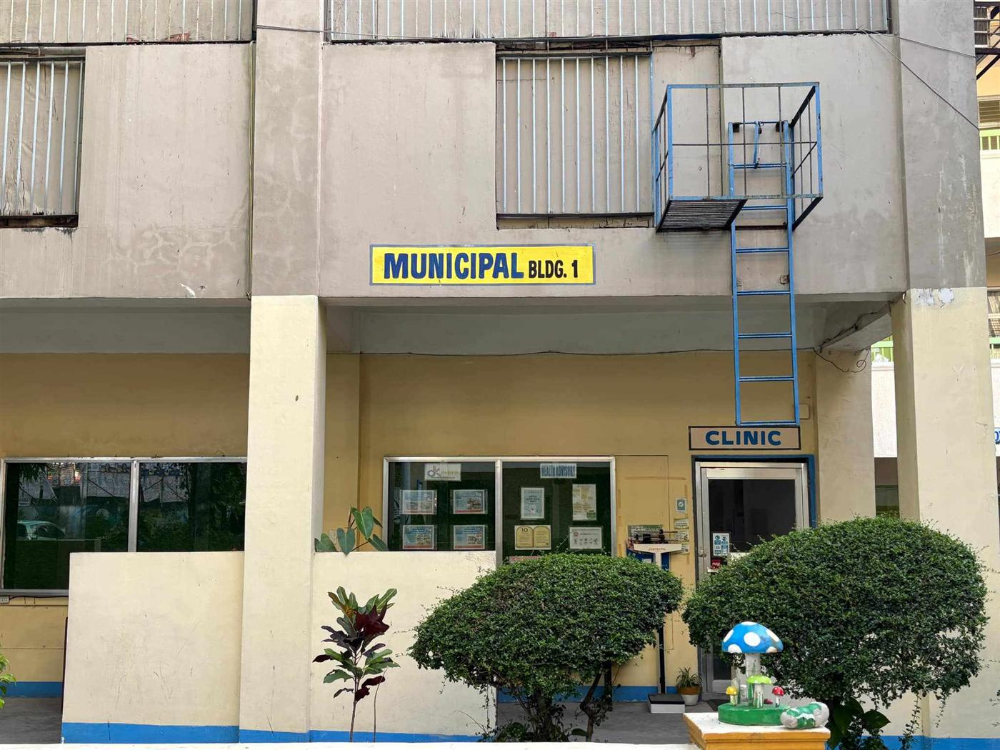
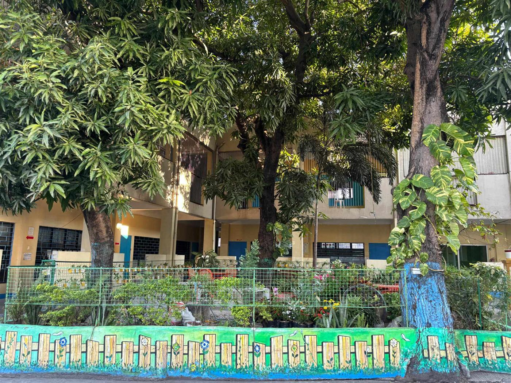
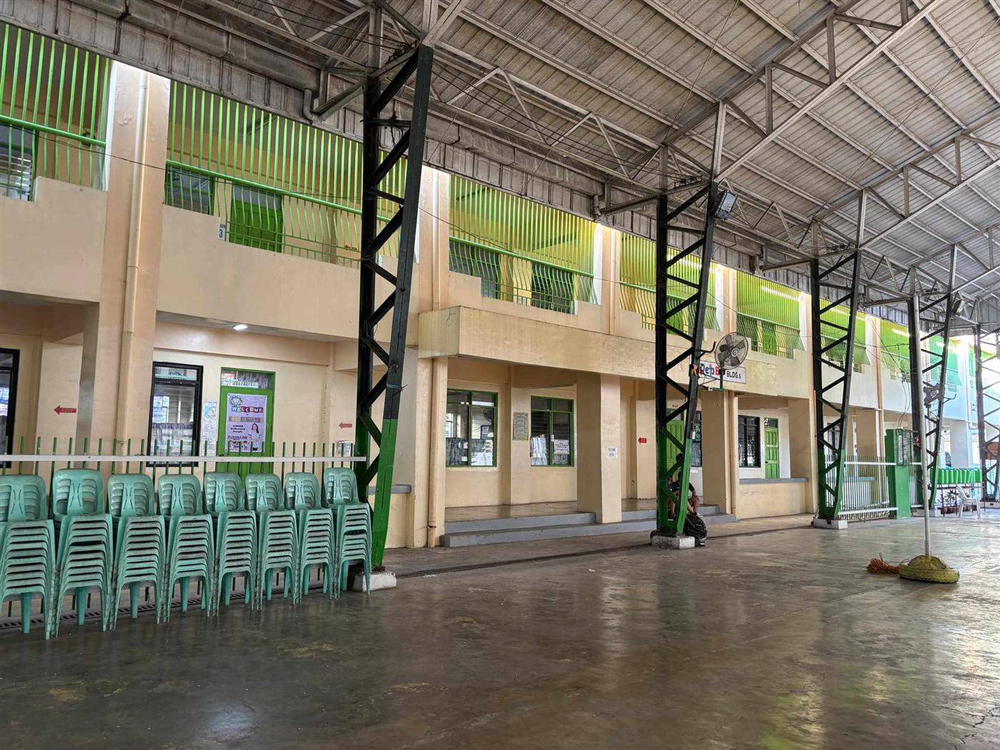
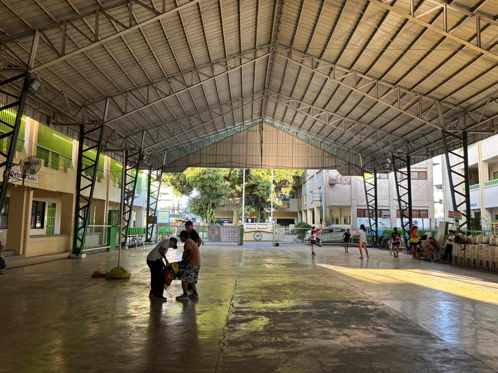

Covered stage
The school stage under a wooden-beam roof, with a lectern bearing the school seal and the I ♥ CESM letters in front of the curtain.
Municipal Building 1 and clinic
Municipal Building 1, with the school clinic on the ground floor beside the garden.


Corridor
One of the long covered corridors that connect the classrooms.
Garden
The tree-shaded garden in front of the classroom buildings, with its painted fence.


Classroom building
A classroom building facing the covered area, with its green window grilles.
Covered court
The roofed court beside the classroom buildings, open on all sides.
